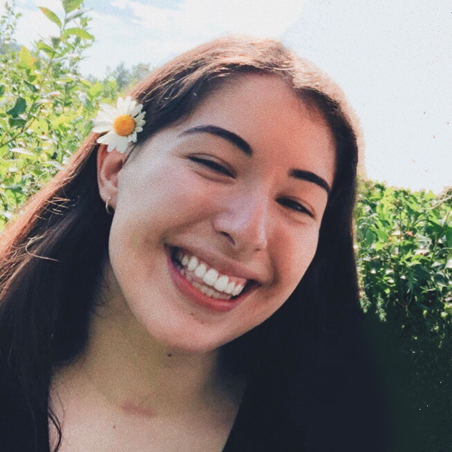
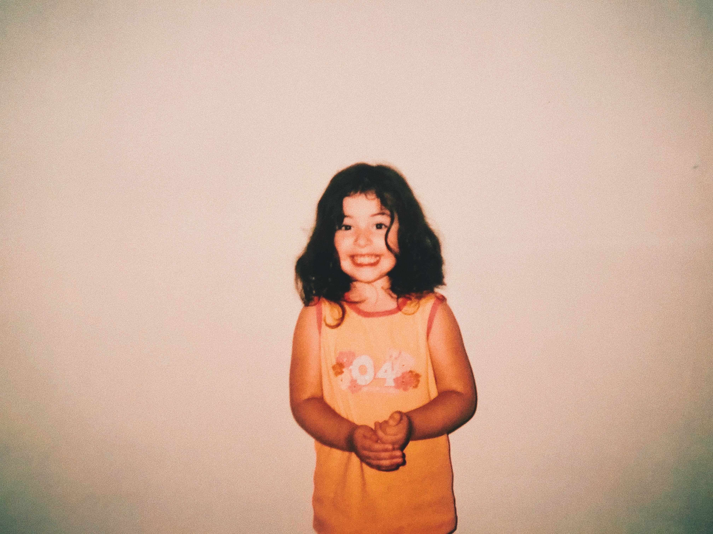
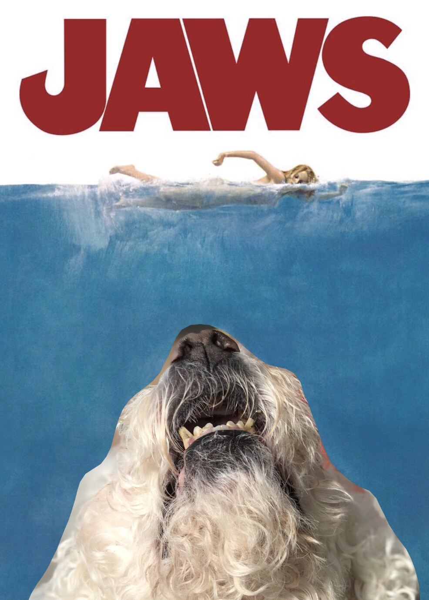
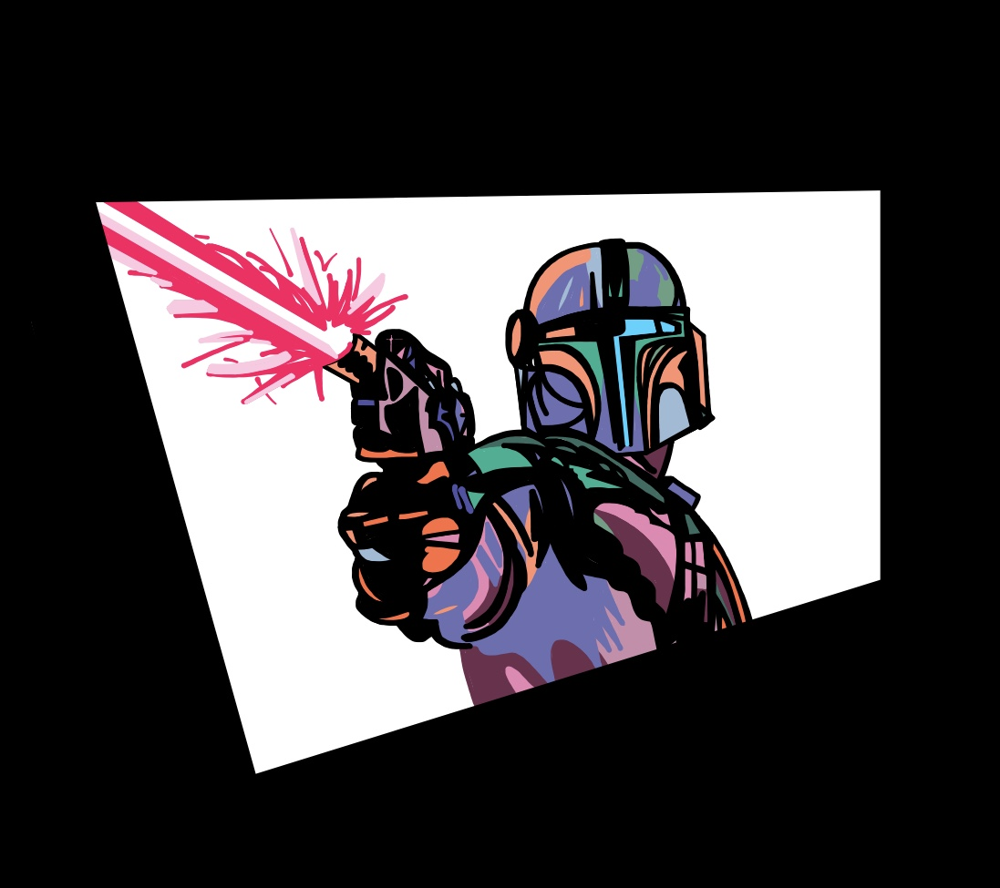
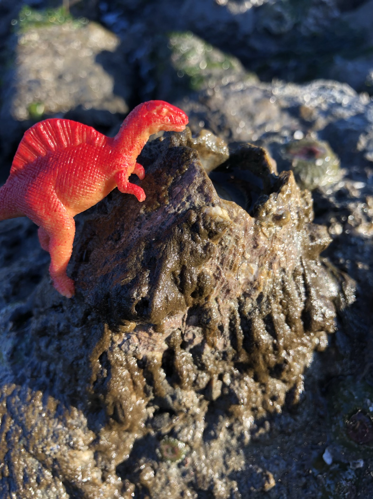

Samantha's Portfolio
This is my portfolio.
Hello! My name is Samantha Murray Tuesta and I am a second-year undergraduate student at Western Washington University with a passion for all things computer science! Welcome to my portfolio!
Click here to see content created by server code.
Click here to learn a fun fact about me:
About Me
I am a first generation college student, in my second year studying Computer Science and Internet Studies. I am currently based in Seattle, WA, and attend college in Bellingham!
At my institution, Western Washington University, I am engaged in research specializing in digital privacy and its portrayal in the media. My work is aimed at creating a digital web game to engage students of all ages and teach the importance of digital privacy and how we go about advocating for those impacted by breaches in that privacy.
Some of my favorite activites include playing piano and cello in my free time, reading, drawing, and designing digital web pages! I first fell in love with computer science through learning HTML and enjoy incorporating that love in my research and studies!
Growing up, I often visited my mother's hometown of Chiclayo, Peru and consider it my second home. I have always grown up with a love of culture and hope to one day explore other cultures to broaden my world-view!
Projects
-
Internet Dashboard
Jan 2021 – Present
An independent project within Western Washington University's Internship in Internet Studies Program taking the pulse of the internet and displaying it in what could be considered the "front page of the internet." Considering eventual support for archival display.
-
Index In Bounds
Dec 2020 – Present
In the midst of developing a portfolio website with other research assistants for the "Index In Bounds" research lab at Western Washington University. Aimed at showcasing current projects and papers created through the lab as well as highlight past and current members.
-
Personal Portfolio
Dec 2020 – Present
Personal Portfolio website to highlight and refine current HTML, CSS, JavaScript, and jQuery skills. Displays an in-depth look into stylistic choices and formatting methods. Not yet responsive to screen size. Actively being built upon.
-
Digital Privacy Detectives
Jul 2020 – Present
Digital privacy is created using technology, personal discretion, and social norms. How do we teach and transform socially negotiated digital privacy norms using digital interactive narratives? Digital Privacy Detectives is an interactive web game digitally designed to provide a solution to this issue. As a Research Assistant, I am tasked with designing and maintaining the overall appearance of the website, as well as developing an overall lesson plan for the educational aspects of the game. So far, I have led in the dynamic design and implementation of 6 HTML pages and the creation of 4 external stylesheets for over 40 commits to GitHub.
-
Book Store
May 2020 – Jun 2020
Bookstore website aimed at storing customer information to be retrieved for future purchases in a database with all product information dynamically generated using PHP and MySQL. Include files are used for all code that is used more than once (i.e. search/browse menu, ListAuthor function, header, and footer). Purpose of the site is to digitally render a functioning website based on and to display skills learned in Fundamentals of Web Development.
Socials
LinkedIn: https://www.linkedin.com/in/sammurraytuesta/
Github: https://github.com/sammurraytuesta
GitLab: https://gitlab.com/sammurraytuesta
Gallery

A picture of me at age three attempting to water plants at my grandmother's house in Chiclayo, Peru
This is another picture of me! Here I am all squeaky clean as I had just gotten out of the bath!
I love making memes and my old dog Oliver often frequented my creations! This is a picture of him as the shark in Jaws!
I also enjoy art! I am a huge fan of the Mandalorian and made this for fun on Notability (although now I prefer using the sketchbook app)!
For a marine biology class in high school, I had a project in which I walked along the beach identifying different organisms and life forms! This is a barnacle that I thought resembled a volcano and put a toy dinosaur next to as a joke!
A hobby of mine is to edit photos! Sometimes I like to take pictures of flowers and enhance the colors to make them appear brighter!
Blog
A hidden talent of mine is that I am really good at flipping things in pans! Pancakes, crêpes, burgers, you name it! I'm not veryy good at cooking them haha but I am very good at flipping them! I actually figured this out one dayy in French class when I had to flip both a penny and a crêpe as part of a tradition for La Chandeleur (crêpe day)!